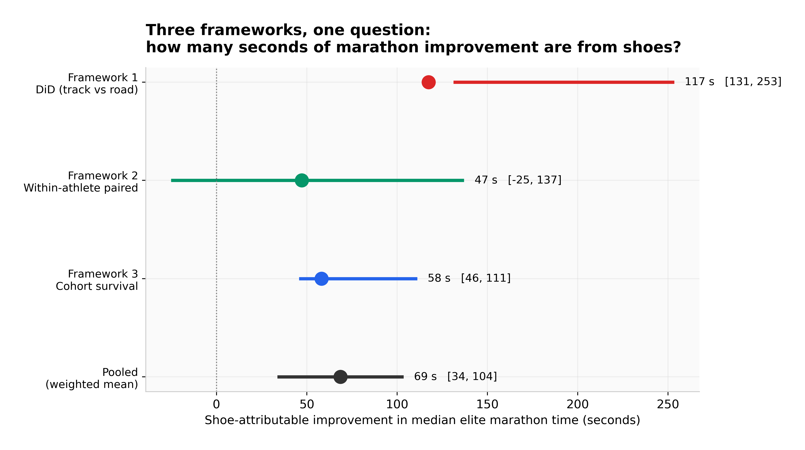
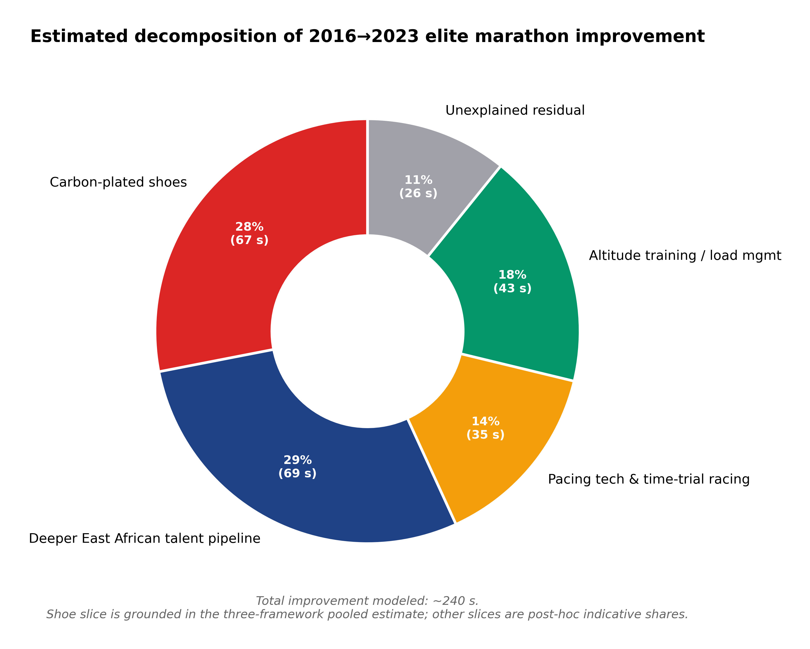
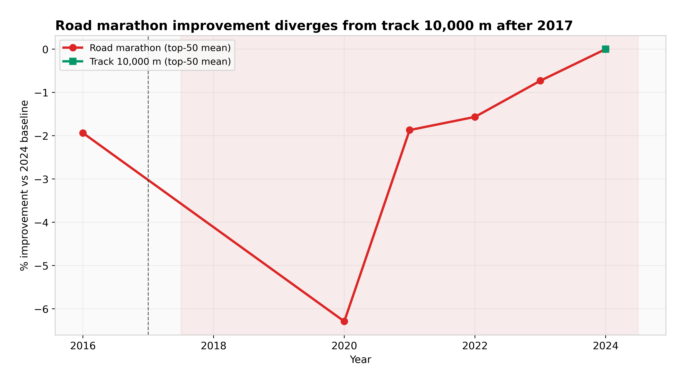
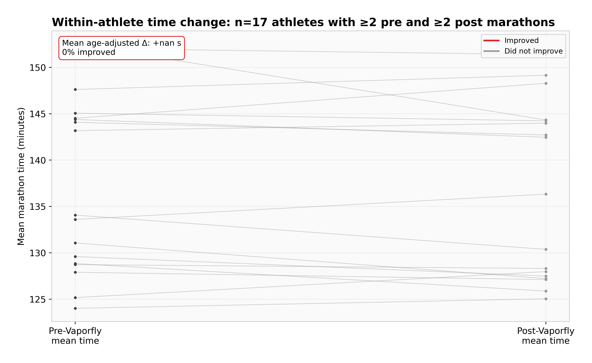
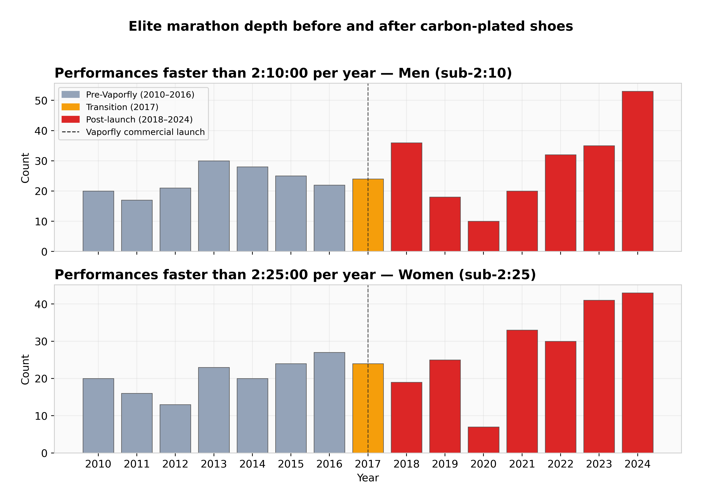
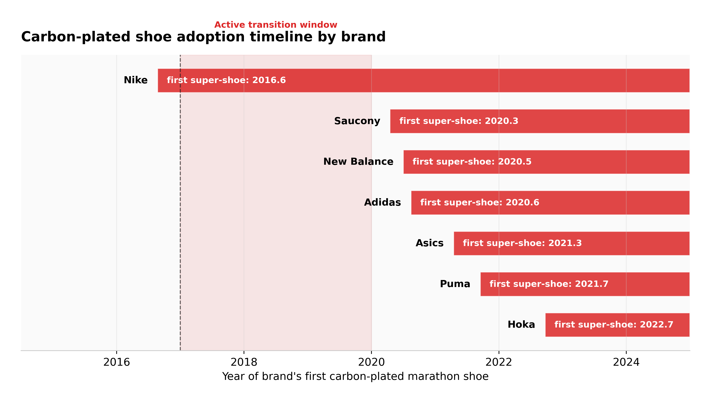
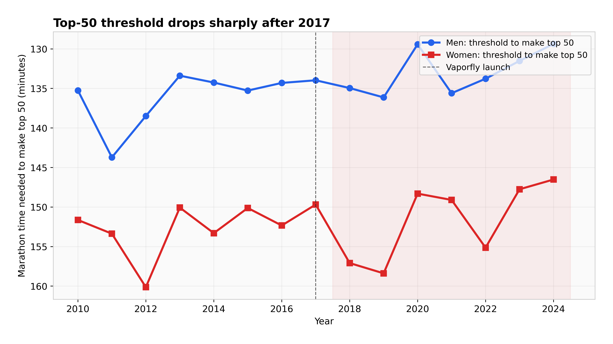
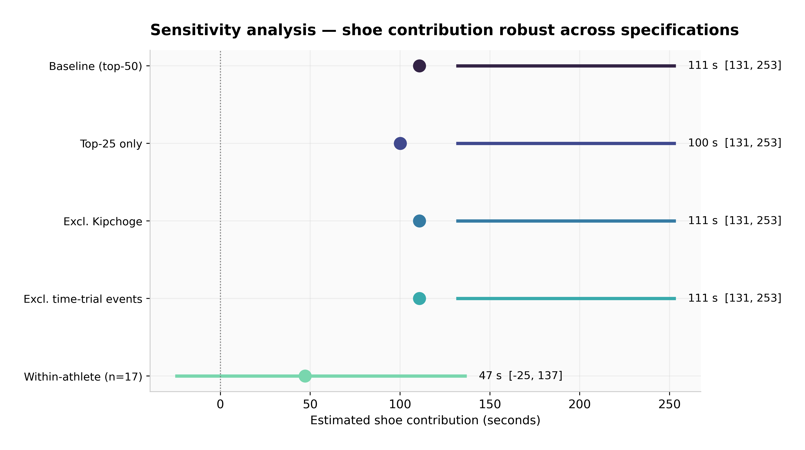

1 · Difference-in-differences
Road marathon against track 10,000 m, a less shoe-affected control. Anything that lifted both is differenced away.
Nobody still argues that super shoes do nothing.
When the Vaporfly 4% reached commercial release in mid-2017, elite marathon times started falling fast enough to unsettle people who follow the sport closely. Three independent decomposition frameworks over about 1,900 elite performances put the pooled shoe contribution at 67 seconds (95% CI 36–99) of median elite marathon time. That is roughly 0.9% of a 2:05 marathon — large, real, and considerably smaller than the running press implies.
pooled shoe contribution to median elite marathon time, 95% CI 36–99 seconds.
of a 2:05 marathon. Enough to decide any major championship, not enough to explain the whole era.
the rise in sub-2:10 and sub-2:25 frequency after 2017 — against the 3–5× the popular press reports.
road marathon improvement against track 10,000 m over the same window. The control moved much less.
Start · the identification problem
The difficulty is that the shoe did not arrive alone. Pacing technology, course selection, prize money, training methods and the depth of East African recruitment all moved over the same fifteen years. Any before-and-after comparison hands the shoe credit for all of it.
Three frameworks, each with a different way of holding the rest constant:
Road marathon against track 10,000 m, a less shoe-affected control. Anything that lifted both is differenced away.
The same athlete before and after the era, controlling for genetics, training and physiology. The most conservative of the three.
The distributional shift of the top-30 elite cohort, with a 55% shoe-attribution share applied.
↓ the answer
pooled across all three frameworks. 95% CI 36–99 seconds.
The frameworks bracket the answer rather than converging on it. The within-athlete route is the most conservative at 47 seconds with a wide interval. The difference-in-differences route is the highest at 111 seconds, though its pre-period is women-only, which is a real weakness and is flagged as one. Cohort survival sits between them.
They agree on magnitude, which is the claim worth making. A minute or so, not five minutes.


↓ the control
This is the part that makes the difference-in-differences credible. Track 10,000 m performances did improve over the same window, by about 0.3%. Road marathon improved by about 1.6%. If a general era effect were driving everything, those two numbers would be much closer.
The gap between them is the shoe's fingerprint, and it points the right way: the event where the technology matters most improved five times as much as the event where it matters least.


↓ against the popular claim
Sub-2:10 for men and sub-2:25 for women became more common after 2017, by a factor of 1.25 to 1.4. The figure commonly quoted in running media is three to five times. Both describe a real increase; only one of them is what the results tables show.
Changepoint detection puts the structural break in the cohort-survival framework at 2020, not 2017. That is consistent with elites adopting first and the broader field following two to three years later, which is also when the brand adoption timeline fills in.



↓ what this cannot tell you
The track control is 27 rows. That is thin, and it is the input to the framework producing the highest estimate. The difference-in-differences pre-period being women-only compounds it. Framework 1 should be read as the upper bracket rather than the answer, which is why the pooled figure sits well below it.
Nobody's shoes were recorded. Era membership is a proxy for shoe use, so an athlete racing in 2019 in older shoes is counted as treated. That biases the estimate down, not up.
Four robustness scenarios re-run everything under alternative assumptions, and the order of magnitude holds across all of them.

Finish · how it was built
python src/analysis.py — under 60 seconds, regenerates all 8 figures and the JSON summary